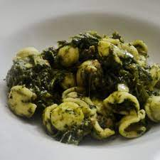

Orecchiete Pugliese

Orecchiete Pugliese - The Finished Product
A delicious, healthy traditional pasta recipe from Puglia in Southern Italy.
Ingredients
- 400 g orecchiette pasta
- 400 g broccoli rabe (14oz)
- 2 garlic cloves
- 5 anchovy fillets
- 4 tbsp extra virgin olive oil
- 1/2 fresh peperoncino
Steps
- Clean the broccoli rabe by removing the hardest and thickest stems and the larger leaves (you can keep the flowers). Break the greens into pieces and wash well.
- Boil the broccoli rabe and the orecchiette together in salted water until the pasta is al dente then drain. (if using fresh orecchiette, let the broccoli rabe cook for 5 minutes first then add the pasta)
- In a frying pan or skillet, heat the olive oil and add the peeled and chopped garlic. Let the garlic soften a little and then add the peperoncino (if you are using it) and the anchovies and stir until the anchovies melt. Keep the heat low so nothing burns.
- Brown the breadcrumbs in a separate frying pan with a little olive oil (if you are using them)
- Add the drained orecchiette and broccoli rabe to the olive oil, garlic and peperoncino.
- Mix everything together well.
- Serve immediately with a sprinkling of breadcrumbs or grated pecorino or hard sheep’s ricotta.